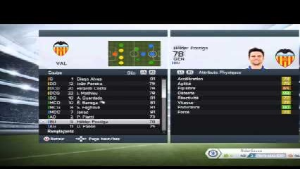

Fifa 15

Fifa 15 is the latest release in the ultimate Fifa series. Released on 25th September in Europe, this game offers enhanced gameplay & more licenses than ever before! Here i will go through the different aspects of the game, offering my opinion and will rate the game under the different sections, enjoy!
Screen User Interface
When you load the game up you will find that the menu screen has identical functionality and layout to its predecessor, Fifa 14. You have the different tabs along the top
which act as main headings for different sections i.e. customise tab displays many sections such as 'edit teams' and 'profile' etc. Just like Fifa 14, you use the right-analogue
stick to scroll through different options on the various sections, the only real difference between Fifa 15 and 14 in this general area is the actual colour scheme used.
I would say that this continuity in the design of the game is a good thing. Keeping things similar to the predecessor means that what we players got used to on last years game is the same
for this one, which avoids confusion and the need to learn the UI all over again.
|
Fifa 14 Menu Screen
|
Fifa 15 Menu Screen
|
One new feature you will find with Fifa 15 is the UI for the team selection. This year they have, in my opinion enhanced the look of the squad selection screen. On Fifa 14 you was faced with the generic list of player names which you could select and swap around but lacked that nice feel that rivals PES added with this area. Fifa 15 adds a much more authentic looking squad selection screen, by displaying the first XI in the formation setup and all in all just making it look better for the player.
|
Fifa 14 Matchday squad select

|
Fifa 15 Matchday squad select
|
UI rating = 8/10
Gameplay
Here's the one you have waited for, the gameplay. Fifa 14 last year for me had fine gameplay. You were able to use different playing styles and still win games.
Whether you was the quick, slick passer who worked you're way through the opposition, or a flukey long passer, either way it worked, although you can definitely say
dribbling past defenders was a tough task. On fifa 15, you have to adapt to a whole new style, a style that was difficult to do on Fifa 14, the dribbling style. On 15,
you kind of have to dribble and run as its the core style that will grant you success.
For me adapting from a slick passing style to a more running, dribbling past everyone style was difficult as i had my style from last year and wanted to stick with it. This
is something that fustrated me about Fifa 15 at first, the fact that i was unable to play my tiki-taka football from last years game on this new release. Over time though,
i have developed a new playing style, the one Fifa 15 wanted me to play and now i can say i enjoy it a lot, whether that's the same for you or not, that's for you to decide.
As for the gameplay itself, i feel the passing is much smoother and nicer looking in regards to the players motion. You can actually see the finesse they place in each pass which is nice.
Also i like the new tap finishing feature that has been implemented on Fifa 15. On last years games, you were only able to do nice finesse shots using the finess control button on the controller,
on this years game however, you can perform nice finess shots by quickly tapping the shoot button, enabing for more quickfire beautiful finishes from you talisman upfront.
Overall i can safely say that the gameplay in matches has improved a lot, with less bugs occuring and with it all looking more like the beautiful game that is football.